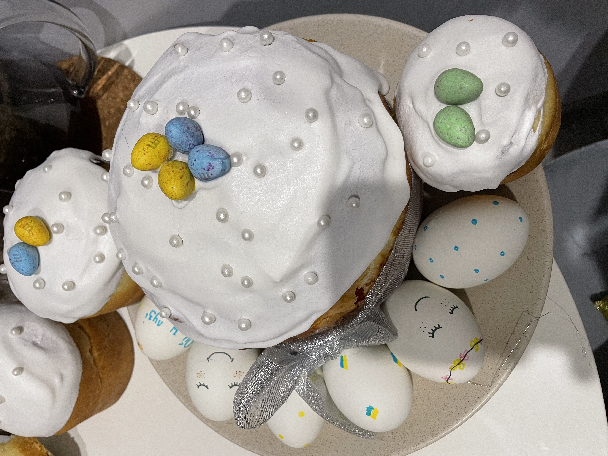
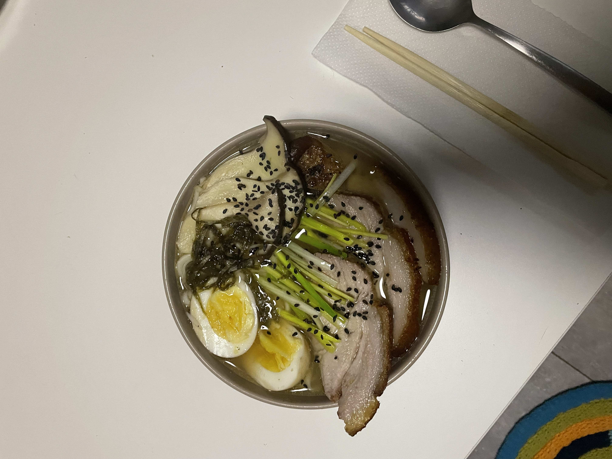
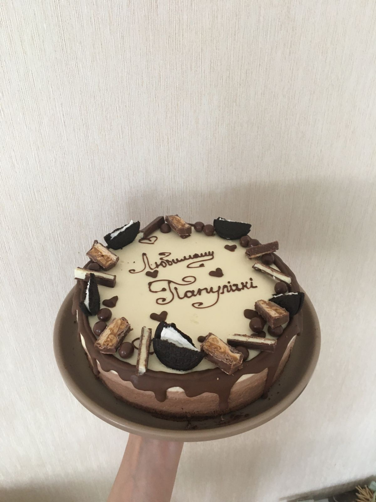
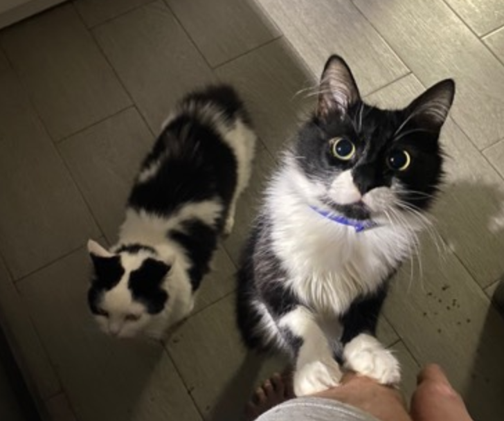

Я Інна, мені 28, і я вирішила перевернути своє життя на 180 градусів! З спеціальністю я вихователь, але в душі програміст! Я працюю в ІТ компанії TRIARE офіс-менеджером, і тут мене надихнули на програмування!

Коджного дня я піклюся про те щоб в офісі максимально було затишно для кожного з них, але це не один мій обовязок
По життю я дуже активна, люблю піші прогулянки, займаюсь стрейченгом та цього літа хочу почати бігати. Для мене відпочинок це затишок дома, тому кожний вихідний у мене приберання, інколи з мене сміються що я хвора на чистоту! Я обожнюю готувати, особливо щось нова, відкривати нові смаки та нові стриви
Найулюбленіше що люблю готувати:
  Я обоюжнюю тварин, тому я власниця двох котів та двох собак
